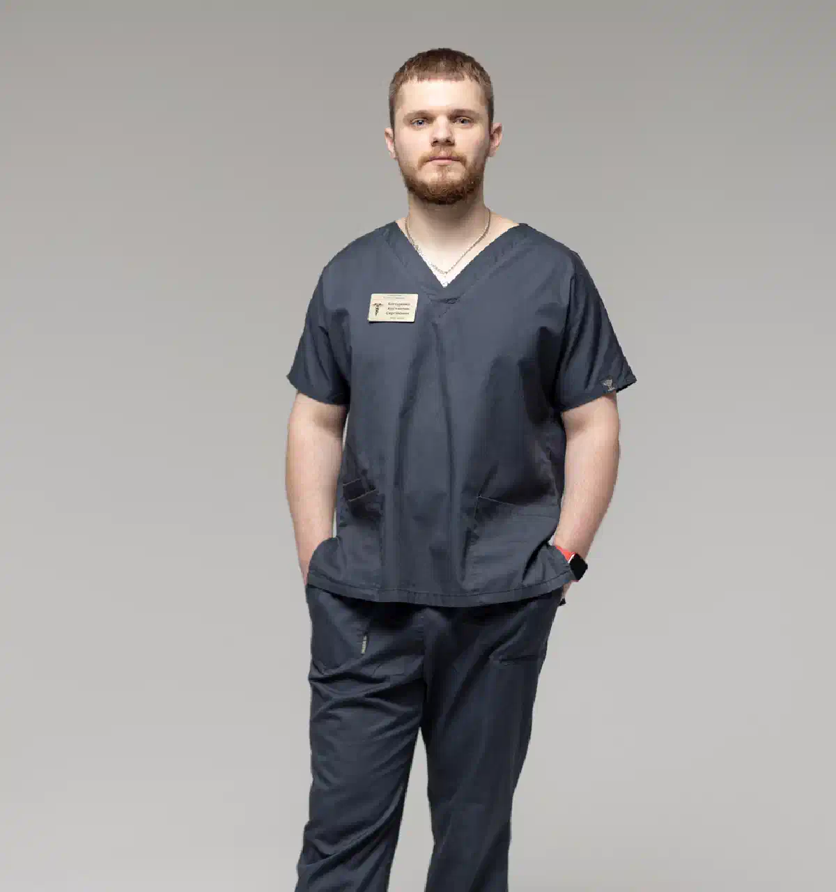

+38(068)
79 72 782
+38(068)
79 72 782Детоксикация после наркотиков в Харькове — лечение на дому и в стационаре
Безопасное восстановление организма


Бесплатная консультация, работаем круглосуточно 24/7
Безопасное восстановление организма

Дата написания: 12 окт. 2026 г.
Последнее обновление: 12 окт. 2026 г.
Детоксикация после наркотиков в Харькове — это комплекс медицинских мероприятий, направленных на стабилизацию состояния пациента после употребления психоактивных веществ, коррекцию нарушений водно-электролитного баланса, устранение опасных симптомов интоксикации и облегчение проявлений наркотической абстиненции. В зависимости от тяжести состояния помощь может проводиться амбулаторно, на дому или в условиях специализированного стационара. Лечение наркотической интоксикации в Харькове начинается с осмотра нарколога, оценки жизненно важных показателей и определения необходимого объёма медицинской помощи. Детоксикация не является универсальным способом быстрого выведения всех наркотиков из организма и не заменяет полноценного лечения зависимости.
Наркотическая интоксикация развивается вследствие воздействия психоактивных веществ на центральную нервную систему, сердечно-сосудистую систему и другие органы. Клинические проявления зависят от вида наркотика, принятой дозы, способа употребления и индивидуальных особенностей организма. Наиболее распространёнными симптомами являются головокружение, тошнота, рвота, выраженная слабость, нарушение координации, тревожность, учащённое сердцебиение и изменения артериального давления. После употребления стимуляторов могут наблюдаться возбуждение, бессонница, потливость и повышение температуры тела. Опиоиды, напротив, способны вызывать сонливость, сужение зрачков и опасное угнетение дыхания. Детоксикация организма после наркотиков рассматривается после оценки состояния пациента, поскольку некоторые симптомы требуют не плановой наркологической процедуры, а немедленной экстренной помощи.
Необходимость медицинской помощи определяется не только фактом употребления наркотиков, но и выраженностью возникших нарушений. Поводом для обращения к наркологу могут стать продолжительная тошнота, повторная рвота, невозможность нормально пить и принимать пищу, признаки обезвоживания, выраженная тревога, бессонница и симптомы отмены после прекращения употребления. Особенно важно обратиться за консультацией при длительной наркотической зависимости, сочетании нескольких веществ или наличии хронических заболеваний. Медицинская детоксикация после наркотиков в Харькове может включать симптоматическую терапию, восполнение жидкости и наблюдение врача. Однако не каждому пациенту необходима капельница: при стабильном состоянии достаточно других методов лечения, которые подбираются индивидуально.
Некоторые проявления наркотической интоксикации представляют непосредственную угрозу жизни. Если человек теряет сознание, редко или нерегулярно дышит, не реагирует на обращение, испытывает судороги, сильную боль в груди или выраженное нарушение сознания, необходимо немедленно вызвать скорую помощь по номеру 103 или 112. Опасными признаками также являются резкое повышение температуры, тяжёлое психомоторное возбуждение и выраженные нарушения сердечного ритма. При подозрении на передозировку опиоидами может потребоваться введение налоксона. До прибытия медиков нельзя оставлять пациента одного, давать ему алкоголь, снотворные или пытаться вызвать рвоту. Если человек без сознания, но нормально дышит, его следует уложить на бок; при отсутствии нормального дыхания — начать сердечно-лёгочную реанимацию, следуя указаниям диспетчера. Скорая помощь при наркотическом отравлении имеет приоритет перед любой домашней детоксикацией.
Консультация нарколога в Харькове является первым этапом организации медицинской помощи после употребления наркотиков. Во время осмотра специалист уточняет, какие вещества употреблялись, когда была последняя доза, как долго продолжается употребление и какие симптомы беспокоят пациента. Дополнительно оцениваются сознание, частота дыхания, пульс, артериальное давление, температура и сатурация кислорода. При необходимости назначаются ЭКГ, лабораторные исследования, оценка функции почек и печени. Полученные данные позволяют определить, требуется ли лечение наркотической интоксикации, помощь при абстиненции или госпитализация. На основании обследования врач подбирает индивидуальную тактику и объясняет пациенту особенности дальнейшего лечения.
Вызов нарколога на дом в Харькове позволяет организовать первичный медицинский осмотр пациента по месту проживания, когда его состояние не требует немедленной госпитализации. Во время визита врач оценивает характер симптомов, уточняет сведения об употреблённых веществах и определяет безопасность домашнего лечения. При наличии показаний специалист может назначить препараты для облегчения отдельных проявлений интоксикации или синдрома отмены, а также провести необходимую поддерживающую терапию. Наркологическая помощь на дому особенно востребована у пациентов, которые испытывают выраженный физический дискомфорт или психологические затруднения при обращении в медицинское учреждение. При обнаружении признаков передозировки, тяжёлых сердечно-сосудистых нарушений или расстройств сознания необходимо организовать экстренную медицинскую помощь.
Детоксикация после наркотиков на дому в Харькове может проводиться только после медицинской оценки и при отсутствии признаков опасной интоксикации. Основная задача домашней помощи заключается в облегчении симптомов, коррекции выявленных нарушений и наблюдении за состоянием пациента. В зависимости от клинической картины врач может рекомендовать пероральную регидратацию, лекарственную терапию или инфузионное лечение при наличии соответствующих показаний. В процессе лечения контролируются жизненно важные показатели, самочувствие и реакция на назначенные препараты. Домашняя детоксикация не предполагает самостоятельного использования сильнодействующих лекарств и не гарантирует быстрого очищения организма от наркотических веществ. При ухудшении состояния пациенту требуется повторная оценка и решение вопроса о госпитализации.
Домашнее лечение рассматривается при относительно стабильном состоянии пациента, сохранённом сознании, нормальном самостоятельном дыхании и отсутствии признаков тяжёлых осложнений. Важное значение имеют возможность медицинского наблюдения, отсутствие выраженного обезвоживания, неконтролируемой рвоты, судорог и опасных нарушений сердечного ритма. Детоксикация на дому после наркотиков чаще предполагает помощь при нетяжёлых симптомах и неосложнённом синдроме отмены, если врач считает такой формат безопасным. При длительном употреблении опиоидов, сочетании наркотиков с алкоголем, наличии тяжёлых хронических заболеваний или нестабильном психическом состоянии предпочтение может отдаваться стационару. Окончательное решение принимается индивидуально после осмотра, а не только по желанию пациента или его родственников.
Детоксикация после наркотиков в стационаре Харькова необходима при состояниях, требующих постоянного медицинского наблюдения, инструментального контроля и возможности немедленного лечения осложнений. Госпитализация может потребоваться при тяжёлой интоксикации, нарушениях сознания, выраженном обезвоживании, судорогах, опасных изменениях температуры тела и сердечно-сосудистых показателей. Стационарное лечение также рассматривают при осложнённой наркотической абстиненции, тяжёлых сопутствующих заболеваниях и одновременном употреблении нескольких веществ. В условиях медицинского учреждения возможно проведение лабораторных исследований, мониторинга жизненно важных функций, внутривенного введения препаратов и специализированного лечения. Наркологический стационар в Харькове позволяет обеспечить более интенсивное наблюдение и своевременно корректировать терапию.
Методы медицинской детоксикации подбираются с учётом конкретного вещества, тяжести интоксикации и сопутствующих нарушений. Основными направлениями являются стабилизация дыхания и кровообращения, восстановление водно-электролитного баланса, контроль температуры тела, симптоматическое лечение и профилактика осложнений. В отдельных случаях применяются инфузионная терапия, лекарственные средства для контроля возбуждения или тошноты, а при опиоидной передозировке — специфический антидот налоксон. Лечение после употребления наркотиков не ограничивается капельницами: при некоторых состояниях определяющее значение имеют наблюдение, поддержка дыхания и лечение конкретных осложнений. После стабилизации состояния врач может рекомендовать дальнейшее лечение зависимости, психотерапевтическую поддержку или специализированную реабилитационную программу.
Капельница после наркотиков в Харькове представляет собой один из методов поддерживающей медицинской терапии, который применяется при наличии соответствующих показаний. Внутривенное введение растворов может потребоваться при обезвоживании, невозможности принимать жидкость внутрь или определённых нарушениях электролитного баланса. Состав и объём инфузии определяются врачом с учётом артериального давления, функции почек, сердечно-сосудистого состояния и результатов обследования. Важно понимать, что капельница для детоксикации после наркотиков не является универсальным средством ускоренного выведения наркотических веществ и не устраняет наркотическую зависимость. При передозировке опиоидов, тяжёлой стимуляторной интоксикации или нарушении сознания первоочередное значение имеет специализированная экстренная помощь, а не инфузионная процедура.
Медикаментозное лечение наркотической интоксикации зависит от механизма действия употреблённого вещества и состояния пациента. Для коррекции обезвоживания могут применяться растворы электролитов, при выраженной тошноте — противорвотные препараты, а при отдельных проявлениях возбуждения — лекарственные средства под медицинским наблюдением. При передозировке героина, фентанила и других опиоидов используется налоксон, который способен временно устранить вызванное ими угнетение дыхания. При стимуляторной интоксикации лечение может включать контроль температуры, давления, пульса и медикаментозное купирование опасного возбуждения. Препараты для детоксикации после наркотиков нельзя подбирать самостоятельно: неправильное сочетание лекарств может усилить угнетение дыхания, вызвать нарушения сердечного ритма или другие серьёзные осложнения.
Героин и фентанил относятся к опиоидам, которые воздействуют на центральную нервную систему и способны вызывать тяжёлую передозировку с угнетением дыхания. При подозрении на острое отравление необходима экстренная медицинская помощь с оценкой дыхательных путей и возможным применением налоксона. Детоксикация после героина и фентанила при сформированной зависимости имеет другую задачу — облегчение синдрома отмены и переход к дальнейшему лечению. Абстиненция может сопровождаться мышечными болями, тревогой, потливостью, бессонницей, диареей и выраженной тягой к веществу. При опиоидной зависимости эффективная помощь может предусматривать лечение бупренорфином или метадоном в рамках соответствующей медицинской программы. После прекращения употребления снижается толерантность к опиоидам, поэтому возвращение к прежним дозам особенно опасно.
Детоксикация после метадона требует особого внимания из-за продолжительного действия препарата и возможного затяжного синдрома отмены. При сформированной физической зависимости резкое прекращение употребления может сопровождаться тревожностью, мышечными болями, расстройствами сна, желудочно-кишечными симптомами и выраженным дискомфортом. Продолжительность абстиненции индивидуальна и зависит от дозировки, длительности приёма и особенностей организма. Врач оценивает тяжесть зависимости и определяет дальнейшую тактику, которая может включать постепенную коррекцию терапии и лечение в специализированной программе. Лечение метадоновой зависимости в Харькове не должно сводиться исключительно к инфузиям или кратковременному снятию симптомов. Если метадон назначен в рамках заместительной поддерживающей терапии, самостоятельно прекращать его приём нельзя.
Налбуфин является опиоидным обезболивающим препаратом, при продолжительном применении которого может развиваться физическая зависимость. Детоксикация после налбуфина в Харькове рассматривается при возникновении симптомов отмены или осложнений, связанных с употреблением препарата. После прекращения приёма возможны тревожность, раздражительность, нарушения сна, мышечные боли, потливость и желудочно-кишечные расстройства. Во время консультации нарколог уточняет длительность использования налбуфина, дозировки, способ введения и наличие других употребляемых веществ. Лечение направлено на облегчение абстинентных проявлений и формирование безопасного плана дальнейшей помощи. При сочетании налбуфина с другими опиоидами, алкоголем или седативными препаратами необходима дополнительная оценка риска дыхательных и других осложнений.
Детоксикация после амфетамина и метамфетамина проводится с учётом выраженного стимулирующего воздействия этих веществ на центральную нервную систему и сердечно-сосудистую систему. После употребления возможны учащённое сердцебиение, повышение артериального давления, тревога, бессонница, возбуждение и повышение температуры тела. При тяжёлой интоксикации существует риск судорог, нарушений сердечного ритма, гипертермии и психотических расстройств. После прекращения употребления могут появляться сонливость, выраженная усталость, подавленное настроение и сильная тяга к стимуляторам. Медицинская помощь после амфетамина в Харькове направлена на оценку осложнений, восстановление нормального сна, коррекцию выявленных нарушений и психологическую поддержку. При тяжёлой депрессии или суицидальных мыслях требуется срочная психиатрическая оценка.
Мефедрон и Альфа-PVP относятся к синтетическим катинонам, употребление которых может сопровождаться выраженным психомоторным возбуждением, тревожностью, тахикардией, повышением артериального давления и нарушениями терморегуляции. Детоксикация после мефедрона в Харькове начинается с оценки состояния сердечно-сосудистой и нервной систем. Особенно опасны продолжительные эпизоды употребления, сопровождающиеся бессонницей, истощением, подозрительностью, галлюцинациями и выраженным возбуждением. Лечение интоксикации Альфа-PVP при тяжёлых симптомах требует стационарной или экстренной помощи, поскольку возможны опасные нарушения температуры тела, работы сердца и психического состояния. После стабилизации пациенту может потребоваться лечение расстройств сна, тревожности и зависимости. Домашняя капельница не заменяет помощь при стимуляторном психозе или тяжёлой гипертермии.
Детоксикация после кокаина проводится при возникновении интоксикации, осложнений или выраженных симптомов после прекращения употребления. Кокаин способен вызывать повышение давления, тахикардию, тревожность, сильное возбуждение и нарушения сердечного ритма. Одним из наиболее опасных осложнений является острый коронарный синдром, который может развиваться даже у людей без ранее диагностированных заболеваний сердца. При боли в груди, судорогах, потере сознания или выраженной одышке необходимо немедленно вызвать скорую помощь. После прекращения употребления нередко наблюдаются усталость, снижение настроения, сонливость и сильное желание повторно принять наркотик. Наркологическая помощь после кокаина в Харькове включает оценку состояния, симптоматическое лечение и рекомендации по дальнейшему лечению зависимости.
МДМА и некоторые другие синтетические наркотики способны вызывать нарушения терморегуляции, водно-электролитного баланса и деятельности сердечно-сосудистой системы. Детоксикация после МДМА в Харькове требует оценки температуры тела, сознания, пульса, артериального давления и других показателей. Опасными осложнениями могут быть гипертермия, судороги и снижение концентрации натрия в крови. Последнее иногда развивается на фоне чрезмерного употребления воды, поэтому самостоятельное питьё больших объёмов жидкости не является безопасным методом детоксикации. При выраженных симптомах необходимо стационарное лечение. После прекращения действия вещества возможны усталость, эмоциональная нестабильность, тревожность и нарушения сна. Лечение подбирается индивидуально и зависит от конкретных проявлений интоксикации.
Одновременное употребление различных наркотических веществ значительно усложняет клиническую картину интоксикации и повышает риск непредсказуемых осложнений. Детоксикация при полинаркомании в Харькове требует выяснения полного перечня употреблённых веществ, времени их приёма и возможных лекарственных взаимодействий. Сочетание опиоидов со снотворными или транквилизаторами повышает риск угнетения дыхания, а одновременное употребление нескольких стимуляторов может усиливать сердечно-сосудистую нагрузку. Симптомы действия одного наркотика иногда маскируют опасные проявления другого. Лечение полинаркомании предусматривает медицинскую стабилизацию, коррекцию осложнений и последующую работу с зависимостью. При неизвестном составе веществ и нестабильном состоянии предпочтительна экстренная медицинская оценка, а не попытка провести самостоятельное очищение организма.
Сочетание наркотических веществ с алкоголем может приводить к усилению токсических эффектов и развитию тяжёлых осложнений. Особенно опасно употребление алкоголя вместе с опиоидами, бензодиазепинами и другими веществами, угнетающими центральную нервную систему. Такое сочетание повышает риск нарушения сознания и остановки дыхания. Детоксикация после наркотиков и алкоголя в Харькове требует оценки влияния всех употреблённых веществ, а также возможного алкогольного абстинентного синдрома. При длительном употреблении алкоголя резкое прекращение может сопровождаться судорогами и делирием. Если у пациента одновременно развиваются наркотическая и алкогольная абстиненция, лечение должно учитывать оба состояния. Вывод из запоя на дому в Харькове может рассматриваться лишь при отсутствии тяжёлых осложнений и после врачебного осмотра.
Снятие наркотической абстиненции в Харькове направлено на облегчение физических и психологических симптомов, возникающих после уменьшения дозы или прекращения употребления психоактивных веществ. Характер синдрома отмены зависит от группы наркотиков. При опиоидной зависимости часто появляются мышечные боли, озноб, потливость, тревога, диарея и бессонница. После стимуляторов более характерны истощение, нарушения сна, подавленное настроение и выраженная тяга к веществу. Врач оценивает тяжесть абстиненции и определяет необходимость медикаментозного лечения, наблюдения или госпитализации. При опиоидной зависимости могут применяться доказательные методы лечения с использованием бупренорфина или метадона. Лечение синдрома отмены от наркотиков является важным этапом помощи, но без дальнейшей терапии зависимости сохраняется высокий риск повторного употребления.
Продолжительность детоксикации зависит от употреблённого вещества, длительности зависимости, выраженности симптомов и общего состояния организма. Детоксикация после наркотиков в Харькове может включать однократный медицинский осмотр, кратковременное наблюдение или лечение на протяжении нескольких суток и более. При лёгких симптомах иногда достаточно амбулаторных рекомендаций, тогда как тяжёлая интоксикация требует госпитализации. Синдром отмены короткодействующих опиоидов обычно начинает проявляться раньше, чем при длительно действующих препаратах, таких как метадон. После стимуляторов нарушения сна, настроения и выраженная усталость могут сохраняться дольше периода острой интоксикации. Точные сроки восстановления заранее определить невозможно. Важно ориентироваться на состояние пациента и динамику симптомов, а не стремиться завершить лечение за определённое количество часов.
Самостоятельные попытки провести детоксикацию организма от наркотиков могут сопровождаться серьёзными рисками. Приём мочегонных, сильнодействующих седативных препаратов, больших объёмов жидкости или неизвестных лекарственных комбинаций не обеспечивает безопасного выведения наркотиков и способен ухудшить состояние. Особенно опасно пытаться самостоятельно лечить передозировку опиоидов, тяжёлое возбуждение, нарушения сознания и сердечно-сосудистые осложнения. Кроме того, выраженные симптомы отмены могут провоцировать повторное употребление наркотика. После периода воздержания прежняя доза способна вызвать передозировку вследствие снижения толерантности. Профессиональная детоксикация после наркотиков предполагает не только облегчение симптомов, но и оценку рисков, медицинское наблюдение и формирование дальнейшего плана лечения.
Анонимная детоксикация после наркотиков в Харькове ориентирована на пациентов, которые стремятся получить медицинскую помощь с сохранением конфиденциальности личной информации. При обращении в частное медицинское учреждение можно уточнить порядок обработки персональных данных, условия консультации и особенности оформления медицинской документации. Конфиденциальность медицинской информации регулируется законодательством, однако конкретные гарантии анонимности и правила ведения документации необходимо уточнять у выбранного учреждения. Анонимная наркологическая помощь может включать консультацию специалиста, оценку состояния, лечение симптомов интоксикации и рекомендации по дальнейшему восстановлению. Независимо от формата обращения главным критерием остаётся безопасность пациента и своевременное оказание необходимой медицинской помощи.
Стоимость детоксикации после наркотиков в Харькове начинается от 2499 грн.
Чтобы организовать вызов нарколога на дом для детоксикации в Харькове, необходимо обратиться в медицинскую службу и кратко описать состояние пациента. Во время разговора желательно сообщить предполагаемое название употреблённого вещества, время последнего приёма, основные симптомы, возраст пациента и наличие хронических заболеваний. Дополнительно следует указать, употреблялись ли алкоголь, снотворные, транквилизаторы или другие препараты. Эта информация помогает предварительно оценить срочность ситуации и определить подходящий формат помощи. Детоксикация после наркотиков на дому проводится только при отсутствии противопоказаний и после оценки врачом. Если пациент находится без сознания, испытывает затруднение дыхания, судороги или другие признаки тяжёлого отравления, необходимо немедленно вызвать 103 или 112.
Телефон для консультации и вызова нарколога на дом в Харькове: +38(050-021-69-57)

Статья проверена экспертом
Могучев Станислав
Врач терапевт, ординатор
Возможно интересная статья:
Можно ли принимать таблетки от давления после алкоголя

Лечение наркотической зависимости начинается с консультации и оценки состояния пациента. Врач уточняет, какие вещества употреблялись, как долго и в каких количествах, когда был последний приём, есть ли симптомы абстиненции, хронические заболевания и предыдущие попытки лечения. При интоксикации или выраженном синдроме отмены первым этапом может стать медицинская детоксикация и стабилизация состояния. После этого составляется дальнейший план лечения зависимости.
В некоторых случаях медицинскую помощь можно оказать на дому, однако это зависит от вида употреблённого вещества, выраженности интоксикации или абстиненции и общего состояния пациента. Перед началом лечения нарколог оценивает сознание, дыхание, давление, пульс и возможные осложнения. При тяжёлом состоянии или высоком риске осложнений требуется лечение в стационаре.
Стационар необходим, если состояние пациента невозможно безопасно контролировать дома. Показаниями могут быть нарушение сознания, угнетение дыхания, судороги, выраженное возбуждение или психоз, тяжёлое обезвоживание, серьёзные сердечно-сосудистые нарушения, сочетанное употребление нескольких веществ или тяжёлые сопутствующие заболевания. Некоторые виды синдрома отмены также требуют медицинского наблюдения и специализированного лечения.
Программа детоксикации подбирается индивидуально и зависит прежде всего от вещества и состояния пациента. Она может включать медицинское наблюдение, коррекцию обезвоживания и электролитных нарушений, симптоматическую терапию и препараты для уменьшения проявлений синдрома отмены. Для некоторых видов зависимости существуют специальные лекарственные методы лечения. Детоксикация помогает пройти острый период, но сама по себе не устраняет наркотическую зависимость.
Продолжительность детоксикации индивидуальна. Она зависит от употребляемого вещества, длительности и частоты употребления, дозировки, сочетания нескольких веществ и состояния организма. У одних пациентов наиболее выраженные симптомы проходят за несколько дней, у других медицинское наблюдение и лечение требуется дольше. Точные сроки можно определить только после оценки состояния пациента.
При некоторых вариантах лёгкого или умеренного синдрома отмены лечение возможно амбулаторно или на дому под наблюдением врача. Однако тяжёлая ломка, выраженное обезвоживание, нарушения сознания, психические расстройства, судороги или серьёзные сопутствующие заболевания требуют стационара. Тактика также существенно зависит от вида наркотического вещества.
Единого срока не существует. Продолжительность ломки зависит от вещества, его дозы, периода употребления и индивидуальных особенностей организма. Острые симптомы могут продолжаться несколько дней и дольше, а нарушения сна, тревожность, снижение настроения и тяга к веществу иногда сохраняются после завершения острого периода. Поэтому после детоксикации важно продолжать лечение зависимости.
Наркотическая зависимость является хроническим, но поддающимся лечению расстройством. При комплексном лечении можно добиться длительной устойчивой ремиссии, прекратить употребление наркотиков и значительно восстановить качество жизни. Для этого обычно недостаточно только снять ломку или провести детоксикацию — требуется дальнейшая работа с зависимостью и профилактика рецидива.
Лечение может включать медицинскую детоксикацию, медикаментозную терапию, психотерапию, мотивационную работу, лечение сопутствующих психических и соматических нарушений, профилактику рецидива и реабилитацию. При опиоидной зависимости существуют доказанные методы длительной медикаментозной терапии, включая препараты на основе метадона или бупренорфина. Конкретная программа определяется индивидуально.
Для планового лечения важно участие самого пациента и его готовность сотрудничать с врачом. Если человек отказывается от помощи, родственники могут получить консультацию специалиста и обсудить способы мотивировать его обратиться за лечением. Если состояние человека представляет непосредственную угрозу жизни — например, при передозировке, нарушении сознания или дыхания — необходима экстренная медицинская помощь.
Не стоит ограничиваться угрозами, конфликтами или попытками силой заставить человека лечиться. Родственники могут обратиться к специалисту без пациента и получить рекомендации по дальнейшим действиям. Мотивационная работа помогает человеку лучше понять последствия употребления и постепенно сформировать готовность к лечению.
Не каждому пациенту требуется одинаковый формат реабилитации, однако после детоксикации дальнейшее лечение крайне важно. Детокс устраняет или уменьшает острые проявления интоксикации и синдрома отмены, но не решает психологические и поведенческие механизмы зависимости. Реабилитация, психотерапия и другие программы поддержки помогают закрепить трезвость и снизить риск повторного употребления.
Да, в ряде случаев нарколога можно вызвать на дом для оценки состояния пациента после употребления наркотиков. Врач определяет выраженность интоксикации или абстинентного синдрома и решает, возможно ли безопасное лечение дома или необходима госпитализация. При потере сознания, выраженном угнетении дыхания, судорогах, тяжёлом возбуждении или подозрении на передозировку следует обращаться за экстренной медицинской помощью.
Анонимно

Помогли при наркотической зависимости
Номер телефона:
+380 (68) 797 27 82
+380 (50) 021 69 57
Адрес наркологического центра вашего города уточняйте по
телефону
Работаем в: Киеве, Одессе, Львове, Харькове, Днепре,
Запорожье, Черкассах, Чугуеве, Черноморске, Каменском
Telegram: t.me/umbrellaplus
График работы: Круглосуточно